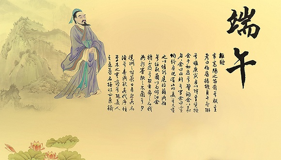

时临仲夏，岁至端午。历史的车轮碾过2200余年，纪念爱国诗人屈原成为每逢此时华夏儿女的一种民族自觉。
时临仲夏，岁至端午。历史的车轮碾过2200余年，纪念爱国诗人屈原成为每逢此时华夏儿女的一种民族自觉。
党的十八大以来，以习近平同志为核心的党中央高度重视民族精神的历史传承和创新发展。他曾在不同场合多次提到屈原，赞叹其心忧家国、情牵百姓、勇于探索、清正高洁的人格魅力和思想精髓，并几度引用屈原诗歌中的名句来阐述思想，寄情言志。
“不数既往，不能知将来；不求远因，不能明近果。”正如习近平所说，今天纪念屈原，是为了寻找古人精神与当下需求的连接点，以溯民族精神之源流、辟与时俱进之路径，用屈原精神为生民“塑心”，为实践“立行”。
若论中华民族根植最深、影响最久的精神品质，必定是爱国情怀。屈原身上，凝结了中国人数千年来对爱国情怀最浓烈的情感与最深重的寄托。
“诚既勇兮又以武，终刚强兮不可凌。身既死兮神以灵，魂魄毅兮为鬼雄。”2014年9月3日，在纪念中国人民抗日战争暨世界反法西斯战争胜利69周年座谈会上，习近平缓缓念出屈原的传世名句。那一刻，历史的悲怆穿越时空隧道与现实碰撞在一起，无数与屈原血脉相通、抱负相同的仁人志士、先烈英杰的面孔一一浮现。
那是陈毅“祖国如有难，汝应作前锋”的气概，那是杨靖宇“拼着热血誓必打倒日本帝国主义”的坚韧，那是“太行浩气传千古”的左权，那也是“捐躯赴国难，视死忽如归”的狼牙山五壮士、东北抗联八位女战士……
他们用生命和行动写就了中华民族的伟大爱国篇章，也为今天实现中华民族伟大复兴中国梦谱下了壮烈奇绝的前奏。
英雄奇志在，千古知音存。近年来，习总书记在不同场合多次提到爱国主义精神对国家、民族的重要意义，勉励国人不忘历史，共建家园。2013年3月17日，习近平在第十二届全国人民代表大会第一次会议上指出：“实现中国梦必须弘扬中国精神。这就是以爱国主义为核心的民族精神，以改革创新为核心的时代精神。”
2015年9月3日，习近平在纪念中国人民抗日战争暨世界反法西斯战争胜利70周年阅兵仪式上再次强调：“沿着中国特色社会主义道路，按照‘四个全面’战略布局，弘扬伟大的爱国主义精神，弘扬伟大的抗战精神，万众一心，风雨无阻，向着我们既定的目标继续奋勇前进！”
和平年代的“赤子之心”，始终激荡着“只要祖国需要，我必全力以赴”的报国之志。近日，习近平发出了向科学家黄大年同志学习的号召。他强调，要把爱国之情、报国之志融入祖国改革发展的伟大事业之中、融入人民创造历史的伟大奋斗之中，从自己做起，从本职岗位做起，为实现“两个一百年”奋斗目标、实现中华民族伟大复兴的中国梦贡献智慧和力量。
“家是最小国，国是千万家……”屈原的伟大，不只在于他初心未改的“故国之恋”，更在于他一心为民的“美政之思”。
“长太息以掩涕兮，哀民生之多艰。”2014年10月15日，在文艺工作座谈会上，习近平吟诵出屈原悲叹民生不兴的诗句。“心中装着全体人民、唯独没有他自己。”同年，在兰考县调研时，习近平指出要特别学习弘扬焦裕禄同志的公仆情怀。
从千百年前的民族偶像，到当今时代的干部榜样，时空相隔久远，但屈原和焦裕禄的民本情怀一脉相承
“人民对美好生活的向往，就是我们的奋斗目标。”十八届中央政治局常委与中外记者的第一次见面时，习近平如是说。这句话是对中华民族积淀两千年“民本思想”的当代阐释，是与无数先贤的隔空对话，也是新时代奋进中的中国民生图景。“人民”在习近平总书记心中始终处于最高的位置，也从来都是他最深的牵挂。
“我最牵挂的，还是困难群众。”2017年元旦，习近平发表的新年贺词，蕴含着对百姓深深的关切。向“穷”宣战，缚住千百年来盘踞在中国大地上的“贫困”苍龙，这个“以民为本”的大国展现出的民生担当令人振奋。
党的十八大以来，习近平总书记亲自主持召开了30余次深改会议，内容涵盖经济、政治、文化、社会、生态建设等各个领域，破藩篱、促公平，民生改革直指沉疴顽疾，人民群众的获得感、幸福感不断增强。
治国有常，而利民为本。今时今日的民生，就像汨罗河水，生生不息；更像汨罗河上的龙舟，百舸竞发！
“路漫漫其修远兮，吾将上下而求索。”屈原的一生，是自觉追求真理的一生。“亦余心之所善兮，虽九死而其犹未悔”屈原这种为了梦想敢于探索的勇气，在历史的演进中得到永生，成为中华民族不断进步与发展的精神内核。
2012年8月21日，在国际天文学联合会第28届大会开幕式上，习近平再次阐述了屈原的“求索”精神。他说，早在2300多年前，中国伟大的诗人屈原就发出了“遂古之初，谁传道之？上下未形，何由考之？”的著名“天问”。
屈原的求索，宏远、抽象，是哲人的“终极之问”；当下国人的求索，明确、具象，有的放矢，是不断的改革创新。
习近平就是“求索”精神的当代践行者。40多年前，在陕西省延川县梁家河村插队时，他远赴四川学习，打好了陕西第一口沼气池，这在当时，是罕见的创新之举。40多年来，这矢志探索的作风从梁家河一路走来，贯穿了他的执政轨迹。
2013年，在看望出席全国政协十二届一次会议的科协、科技界政协委员时习近平说：“要坚定不移走中国特色自主创新道路，深化科技体制改革，不断开创国家创新发展新局面。” 2014年，在亚太经合组织（APEC）工商领导人峰会上，他指出：“如果说创新是中国发展的新引擎，那么改革就是必不可少的点火器，要采取更加有效的措施把创新引擎全速发动起来。”
党的十八大以来对全面深化改革作出部署，涉及经济、政治、文化、社会、生态文明和党的建设等各个方面多项重要改革举措应时而生；首次海域可燃冰试采成功、C919大型客机成功首飞、天舟一号飞行任务圆满成功……党的十八大以来，科技领域重大创新成果斐然，国人的科技自信和自豪感一次次被点燃；2017年5月14日，世界见证了中国“一带一路”国际合作高峰论坛的隆重启幕，2013年提出的“一带一路”倡议，标志着在习近平的带领下，中国人民的上下求索之路，已经迈出国门、惠及世界，越走越宽阔，越走越通畅。